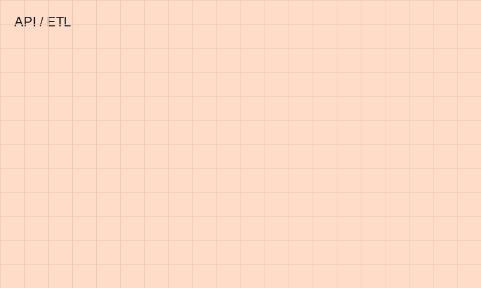
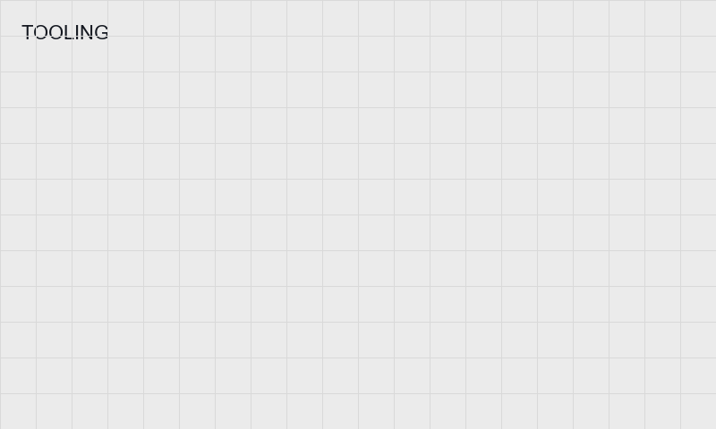

2021 — 2023 · 北京大岳咨询
轨道交通 PPP 可研与财务测算
参与北京市轨道交通大兴线存量 PPP、平谷线 PPP 等多个项目的可行性论证报告、实施方案及财务测算模型的编制与修订。
- 可研覆盖政策依据、必要性可行性、运作方式等完整框架。
- 测算模型综合考虑合作期限、资本金、折现率、客流、运营成本、贷款利率等因素，运用等额本息法、内部收益率法等。
欢迎到访个人作品集 · 点击按钮后继续浏览
LI · TIANHAO / INVESTMENT · PPP & INFRASTRUCTURE CONSULTING
投资学 · 基础设施投融资与 PPP 咨询
熟谙可研、实施方案与财务测算模型全流程撰写与修订；跟踪行业与财政政策并沉淀为汇编与客户依据。驻财政局期间负责沟通、需求分析与制度性文件起草，并参与全国 PPP 综合信息平台信息公开审查与质量提升专项。
自我评价（摘录）：对行业政策保持敏感度，熟悉咨询项目流程与报告撰写；希望继续深造，拓宽视野，夯实金融与专业素养。
参与北京市轨道交通大兴线存量 PPP、平谷线 PPP 等多个项目的可行性论证报告、实施方案及财务测算模型的编制与修订。
根据客户需求常驻北京市财政局，负责沟通、需求分析与文件起草，参与项目库管理与政策咨询相关工作。
参与全国 PPP 综合信息平台信息公开情况的审查与统合，参与 PPP 信息质量提升专项行动。
大兴线存量、平谷线等项目：可研报告、实施方案与测算模型（占位图请换脱敏截图）。
财政承受能力报告、良好实践、年度工作情况报告；《项目库管理办法》修订协助等（占位图）。
信息公开审查、统合与专项提升行动（占位图）。

跟踪政策变化，整合更新汇编，为客户实施与信息公开提供依据（占位图）。
院专业辩论赛亚军、最佳辩手；活动宣传计划、公众号与新闻稿（占位图可换活动照片）。

公司金融、投资学、投行学、计量经济学、资产评估等；可在此放课程项目或论文封面（占位图）。
替换 showcase-*.png 为不涉密截图；链接已暂时指向站内锚点，有外链时再改 href。
与简历 PDF 一致；公开发布前请确认是否愿意展示QQ邮箱与手机号。
管理学、产业经济学、公司金融、房地产经济学、国际投资学、微观/宏观经济学、投资学、投资银行学、会计学、财务管理、金融学、博弈论、计量经济学、资产评估、商务英语中级等（完整列表见简历 PDF）。